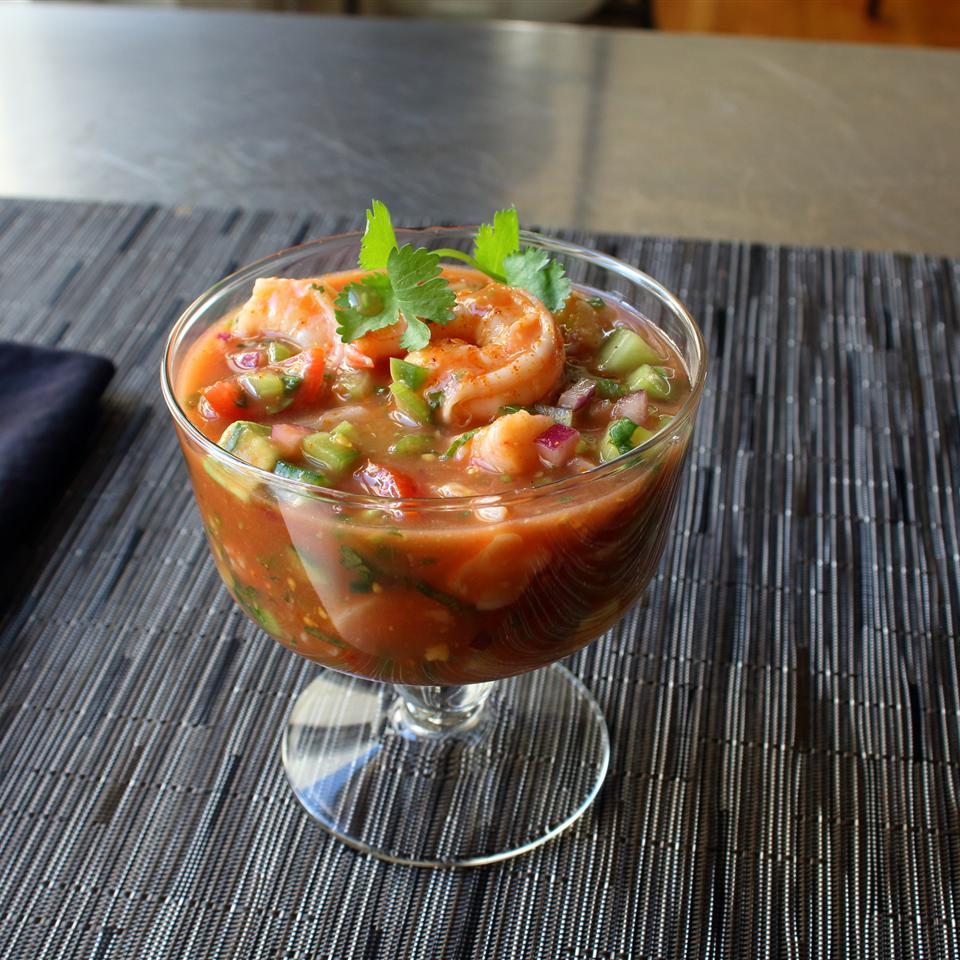

Mexican-Style Shrimp Cocktail

Description
You can pretty much get Mexican food like tacos and burritos in just about any corner of the country these days. However, Mexican Shrimp Cocktails don't seem to have caught on elsewhere as they have in the Bay Area. Here's my version--you can adapt your own recipe using the listed ingredients and amounts as a rough guide.
Ingredients
- 1 cup clam juice
- 1 pound large shrimp, peeled and deveined
- 1 ¼ cups peeled, seeded, diced ripe tomatoes
- 1 cup diced English cucumber
- ½ cup diced celery
- ½ cup finely diced red onion
- 2 tablespoons seeded and diced jalapeno peppers
- ½ cup ketchup
- 2 limes, juiced
- 2 tablespoons freshly chopped cilantro, plus more for garnish
- Mexican-style hot sauce, to taste
- 1 large Hass avocado, cubed
Steps
- Place clam juice and oregano in a saucepan; bring to a boil over medium-high heat. Add shrimp and stir just until shrimp turn pink and are not quite cooked through, about 2 minutes. Transfer shrimp to a bowl with a slotted spoon. Reserve liquid. Let shrimp cool to room temperature.
- Place chopped tomatoes, cucumbers, celery, red onion, and jalapenos is a mixing bowl. Add ketchup, cooking liquid from the shrimp, lime juice, cilantro, and hot sauce. Gently mix until ingredients are well blended.
- Chop shrimp into bite-size pieces, leaving a few whole for garnishes. Stir chopped pieces into the vegetable mixture. Wrap mixing bowl with plastic wrap. Place reserved shrimp in a bowl; wrap with plastic wrap. Refrigerate shrimp cocktail and reserved shrimp until thoroughly chilled, 2 to 3 hours.
- If mixture seems a bit thick, add a little tomato juice or pickle juice. Stir in avocado cubes. Serve, if possible, in clear glass bowls. Top with reserved whole shrimp and some cilantro leaves.